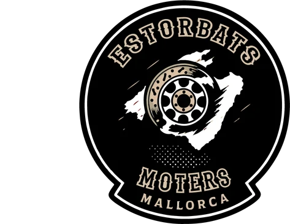
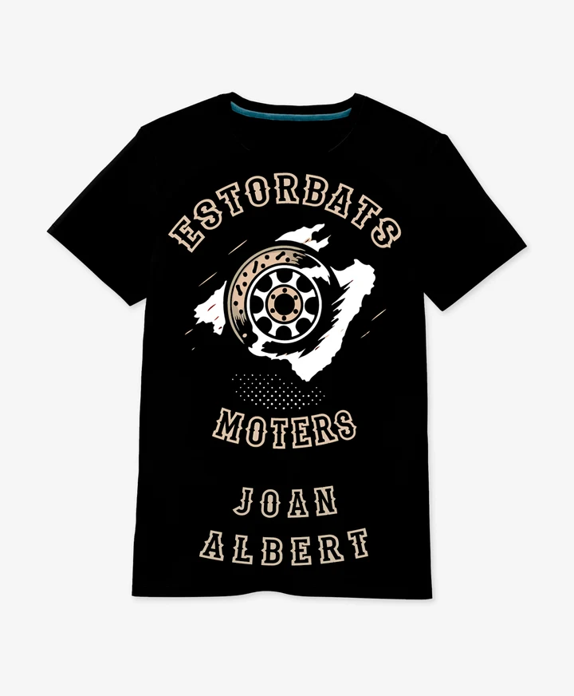
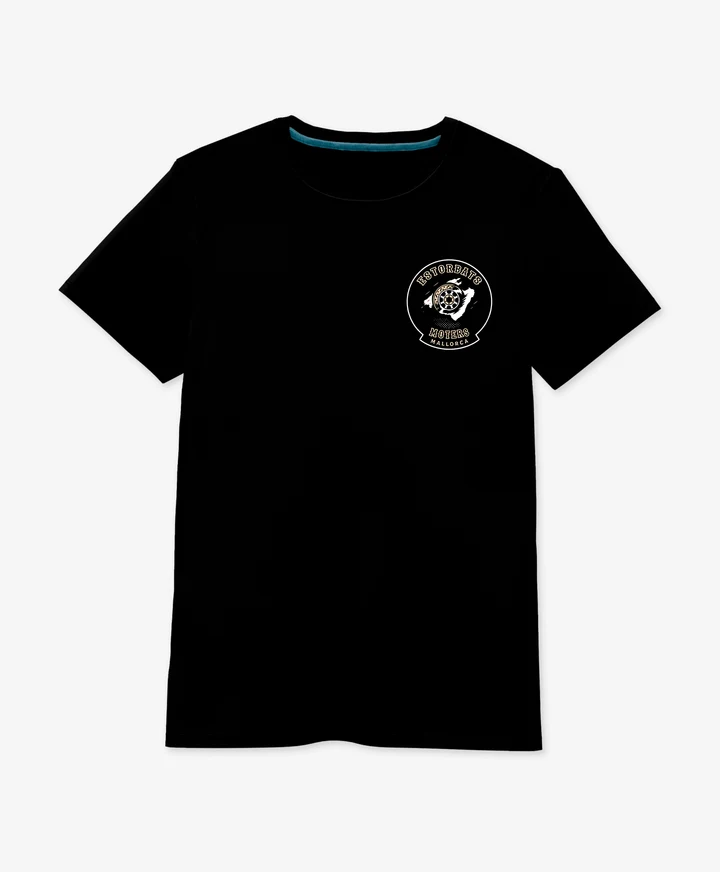

Diseño gráfico
Logo motero
Identidad visual para un grupo de moteros de Mallorca. Un disco de freno se fusiona con la silueta de la isla en un logotipo de inspiración vintage que expresa comunidad y vínculo local.





